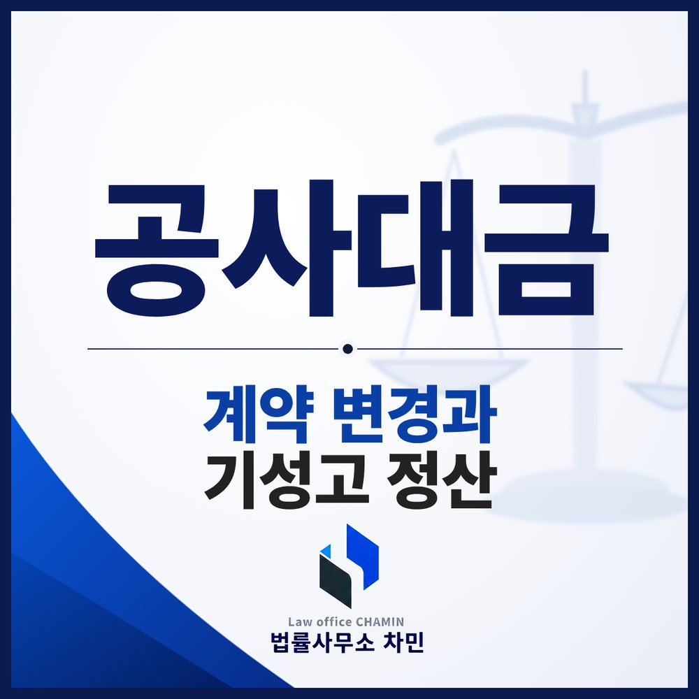

핵심 답변
공사 도중 추가·변경된 내용은 문자라도 남겨 두어야 합니다. 원사업자가 지급정지·파산되면 하수급인은 발주자에게 직접 지급을 요청할 수 있습니다.
공사대금 사건은 일반 대여금 사건과 달리 당사자가 많고, 공사 범위와 금액이 공사 중에 계속 바뀌며, 특별법이 따로 적용됩니다. 이 세 가지 특성을 알고 준비해야 받을 돈을 제대로 계산할 수 있습니다.

당사자가 많습니다
공사에는 건축주(발주자), 공사를 맡은 시공사(원사업자), 그 일부를 다시 맡은 하수급인(수급사업자)이 있고, 최근에는 신탁회사가 건축주 지위에 있는 경우도 많습니다. 누구와 계약했는지, 누가 대금을 지급하기로 했는지에 따라 청구할 상대방과 근거가 달라지므로 계약서의 당사자란부터 확인해야 합니다.
계약은 공사 중에 바뀝니다
처음 계약대로 끝나는 공사는 드뭅니다. 마감재를 바꾸거나 공간을 추가하거나 일정이 밀리면서 공사 범위와 대금이 바뀌는데, 이를 말로만 합의하면 끝난 뒤 “추가 공사를 해 주기로 한 적 없다”, “그건 원래 금액에 포함된 것”이라는 다툼이 생깁니다. 예를 들어 다락방 단열 공사를 무상으로 해 주기로 했다면 계약서 특약이나 변경 계약서에 적어 두어야 하고, 적어도 문자나 메신저로 합의 내용을 확인받아 두는 것이 좋습니다.
중도 해제와 기성고 정산
계약이 해제되면 원칙적으로 서로 받은 것을 돌려줘야 하지만, 건물 공사처럼 상당 부분이 진행된 공사는 이미 지어진 부분을 되돌리는 것이 사회경제적으로 손실이 큽니다. 그래서 판례는 공사가 상당히 진행된 뒤 해제되면 완성되지 않은 부분에 대해서만 해제의 효력이 생기고, 이미 시공한 부분은 그 비율(기성고)에 따라 대금을 정산하도록 봅니다. 기성고 비율이나 금액을 두고 다투면 법원 감정을 거치는 경우가 많아, 공정별 사진과 자재 반입 내역, 공정표를 남겨 두는 것이 중요합니다.
하도급법이 적용되는 경우
원사업자에게서 일을 받은 수급사업자는 계약상 지위가 약한 경우가 많아 하도급법이 따로 보호합니다. 건설뿐 아니라 제조, 수리, 용역 위탁에도 적용됩니다.
- 발주자의 직접 지급: 원사업자의 지급정지·파산 등으로 대금을 받을 수 없게 되어 수급사업자가 요청한 때, 원사업자가 하도급대금을 2회분 이상 지급하지 않아 수급사업자가 요청한 때 등에는 발주자가 수급사업자에게 시공한 부분에 상당하는 대금을 직접 지급해야 합니다(하도급법 제14조).
- 3배 이내 배상: 원사업자가 부당하게 위탁을 취소하거나 부당하게 대금을 깎는 등 법이 정한 위반을 하면, 수급사업자가 입은 손해의 3배 이내에서 배상책임을 집니다(같은 법 제35조 제2항). 원사업자가 고의·과실이 없음을 증명하면 책임을 면합니다.
3년 안에 청구하세요
공사에 관한 채권은 3년의 단기소멸시효가 적용됩니다(민법 제163조 제3호). 상대방이 다투지 않는 금액이라면 지급명령이 빠를 수 있고, 재산 처분이 걱정되면 가압류를 먼저 검토합니다.
익산에서 공사대금을 받지 못했다면
익산 현장이나 익산에 있는 상대방이라면 전주지방법원 군산지원에서 다투는 경우가 많습니다. 익산공사대금변호사와 상의할 때는 계약서와 변경 합의 기록, 견적서, 공정 사진, 기성 청구와 입금 내역을 날짜순으로 정리해 오세요.